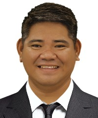

Jecks Randall Andrada | WDD 130
Hello, my name is Jecks Randall D. Andrada and I am from Philippines. I’m naturally a bit of a shy guy, but once you get to know me, I’m a lot of fun to be around! I love comedies—laughter is my kind of therapy—and I’m always excited to discover new things, whether it’s a fresh hobby, an interesting idea, or a hidden gem in tech. Right now, I’m diving into the world of web design and development as a student at BYU Pathway, and I’m absolutely thrilled to expand my skills in software development. I can’t wait to see my own website designs come to life and eventually build programs that generate income. The future? It’s bright, and I’m ready for it. Join me, and let’s uncover the endless possibilities ahead—together!